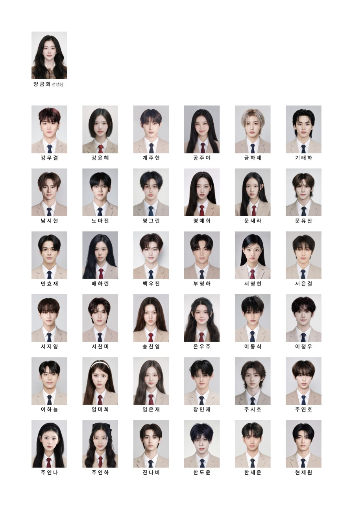

돌이킬 수 있을지도 모를 걸음
START
BAEKSEOK
/
STAGE 01
▣
소지품
0
♫
음악 켜짐
3학년 4반 · 교실
ITEM GET
강무결
▤ 출석부 보기
SKIP
▼
다음
▲
◀
●
▶
▼
INVENTORY
소지품
×
조사 중 획득한 물품이 이곳에 보관됩니다.
CLASS 3-4
사물함 조사
이름표를 선택해 사물함을 열어 보세요.
×
OBJECT · PADLOCK
교실 문 자물쇠
×
자물쇠는 비밀번호로 열 수 있다.
네 자리 비밀번호
확인 ▼
SKIP
ANOTHER ENDING
REPLAY ↻
CLASS 3-4
3학년 4반 출석부
×
